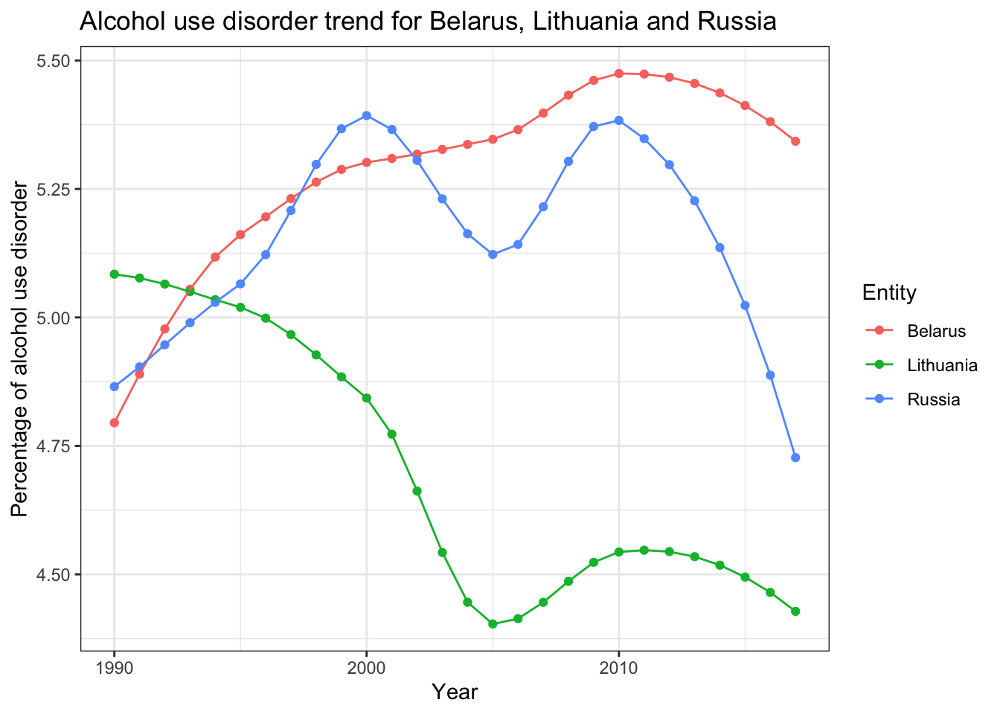

| Rank | Entity | Code | Year | Alcoholuse_Disorder |
|---|---|---|---|---|
| 1 | Belarus | BLR | 2017 | 5.342888 |
| 2 | Russia | RUS | 2017 | 4.727182 |
| 3 | Estonia | EST | 2017 | 4.713617 |
| 4 | Ukraine | UKR | 2017 | 4.686883 |
| 5 | Lithuania | LTU | 2017 | 4.428001 |
| 6 | Latvia | LVA | 2017 | 4.408781 |
| 7 | Moldova | MDA | 2017 | 4.074256 |
| 8 | Mongolia | MNG | 2017 | 3.478108 |
| 9 | Kazakhstan | KAZ | 2017 | 3.369006 |
| 10 | Greenland | GRL | 2017 | 3.086688 |
Analysing disorders
Alcohol Use Disorder
At a glance, it can be observed that most of the top 10 countries with a high percentage of their population suffering from alcohol use disorder originate from Eastern European countries.
The country with the highest alcohol use disorders is Belarus with 5.34% of its population suffering from it in 2017. That is roughly 500,000 people out of the 9.459 million citizens of Belarus in 2017. Belarus has one of the highest alcohol consumption per capita in the world.
Are alcohol control policies effective?
Based on the top 5 countries in alcohol use disorders, we are zooming in on Belarus, Lithuania and Russia.

Over the years, it can be observed that there are fluctuations in alcohol use disorders in these 3 countries. Russia and Lithuania have experienced overall negative growth, comparing 2017 and 1990. These are countries that have adopted alcohol control policies such as increasing the legal age of drinking and increasing alcohol tax. Belarus had also implemented similar alcohol control policies, though its effects are evidently less impactful as people found cheaper alcohol alternatives produced domestically to avoid high pricing from taxes (Pavel Grigoriev & Bobrova, 2020). One of the initiatives that caused alcohol consumption to fall after 2010 is the restriction of the production of fruit wines domestically (Pavel Grigoriev & Bobrova, 2020). However, the percentage of the population with alcohol use disorder has not decreased by much.
Though alcohol control policies can help reduce the onset of alcohol use disorders, are limited in their effects. These policies should be used in tandem with accessibility to treatments that takes a more human approach rather than an economic one.
Model countries with low alcohol use disorders
| Rank | Entity | Code | Year | Alcoholuse_Disorder |
|---|---|---|---|---|
| 168 | Italy | ITA | 2017 | 0.462937 |
| 167 | Israel | ISR | 2017 | 0.498381 |
| 165 | Morocco | MAR | 2017 | 0.574866 |
| 164 | Iran | IRN | 2017 | 0.579778 |
| 163 | Japan | JPN | 2017 | 0.582880 |
| 162 | Syria | SYR | 2017 | 0.621551 |
| 161 | Yemen | YEM | 2017 | 0.634413 |
| 160 | Malaysia | MYS | 2017 | 0.644969 |
| 159 | Sudan | SDN | 2017 | 0.645813 |
| 158 | Palestine | PSE | 2017 | 0.648970 |
Most of these countries practice the religion of Islam, which considers drinking alcohol non-halal and it not allowed. This explains why these countries belong in the bottom 10 in terms of alcohol use disorders.
Italy has been successful in implementing policies to reduce alcohol consumption since the early 2000s (Asciutto et al., 2015). In addition, there are changes in social norms regarding eating habits and a greater spread of non-alcoholic beverages (Asciutto et al., 2015). However, despite this low percentage, research has shown that only 5% of admitted patients in hospitals are recognised as having an alcohol use disorder (Ceccanti et al., 2018). This shows that there is a lack of information and awareness, even among professionals about alcohol use disorders.
Summary: Italy’s implementation of alcohol control policies can be used as a guide to reduce alcohol consumption. These policies may not always cause a decrease in alcohol use disorder. Increased accessibility to therapy such as Alcoholic Anonymous (AA) and medications may be a better way to deal with persistently high percentages of alcohol use disorder within countries.
Depression
| Rank | Entity | Code | Year | Depression |
|---|---|---|---|---|
| 1 | Greenland | GRL | 2017 | 6.233635 |
| 2 | Lesotho | LSO | 2017 | 5.636661 |
| 3 | Morocco | MAR | 2017 | 5.413573 |
| 4 | Iran | IRN | 2017 | 5.116345 |
| 5 | Uganda | UGA | 2017 | 4.918028 |
| 6 | United States | USA | 2017 | 4.835610 |
| 7 | Finland | FIN | 2017 | 4.792736 |
| 8 | Palestine | PSE | 2017 | 4.665074 |
| 9 | Australia | AUS | 2017 | 4.623881 |
| 10 | Sweden | SWE | 2017 | 4.487911 |
| Rank | Entity | Code | Year | Depression |
|---|---|---|---|---|
| 168 | Colombia | COL | 2017 | 2.196154 |
| 167 | Albania | ALB | 2017 | 2.208414 |
| 165 | Poland | POL | 2017 | 2.250472 |
| 164 | Peru | PER | 2017 | 2.276321 |
| 163 | Myanmar | MMR | 2017 | 2.300982 |
| 162 | Bosnia and Herzegovina | BIH | 2017 | 2.319610 |
| 161 | Macedonia | MKD | 2017 | 2.332386 |
| 160 | Romania | ROU | 2017 | 2.359174 |
| 159 | Slovakia | SVK | 2017 | 2.401999 |
| 158 | Bulgaria | BGR | 2017 | 2.543141 |